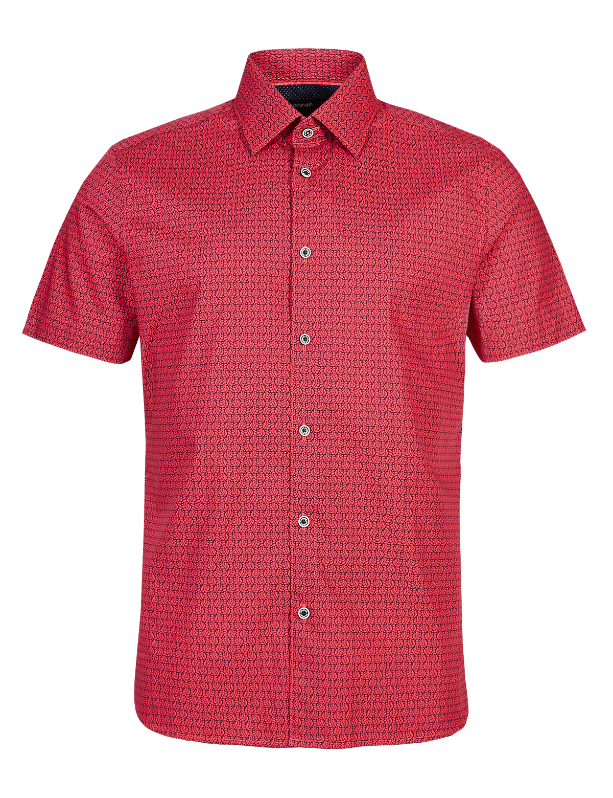
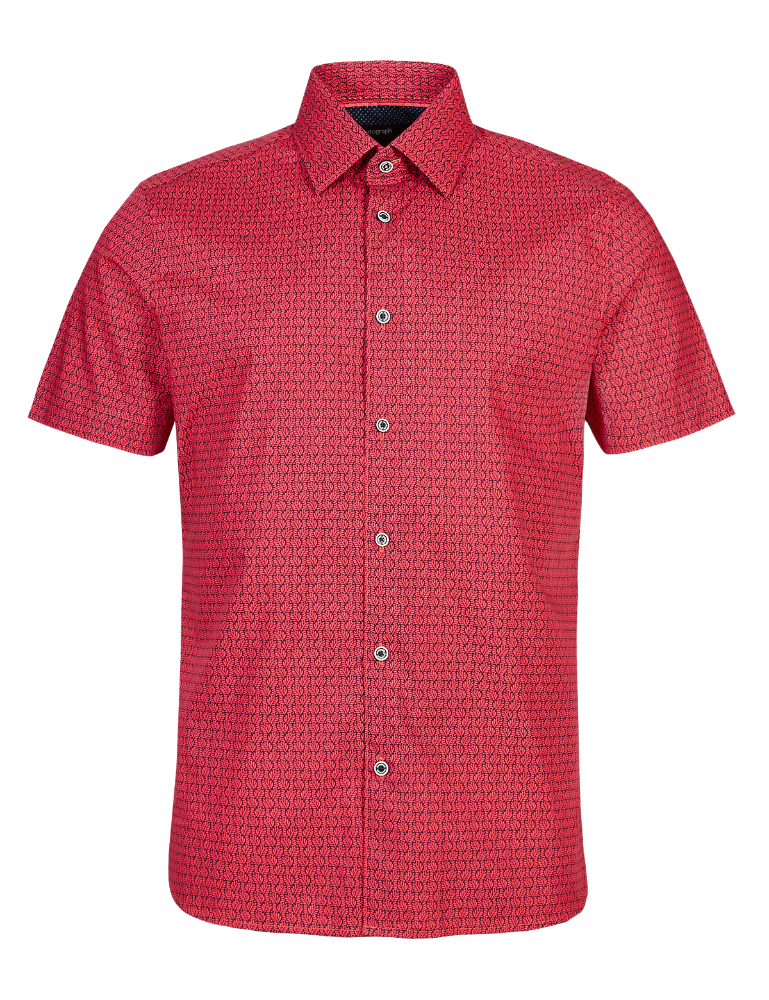

jQuery UI CSS3 CoverFlow 2.2 (Preview)
 



Sample Text
Interaction supported: Cover-click, Slider, Playlist-click, Bi-Directional Keyboard Navigation, Mouse-Slide, MouseWheel.
Compatible with jQueryUI 1.8.9 and jQuery 1.6.2+